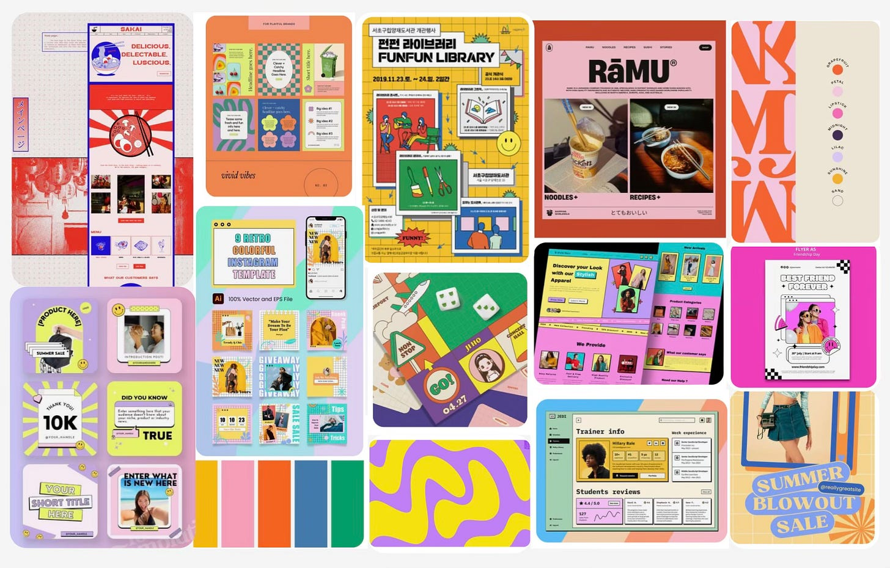
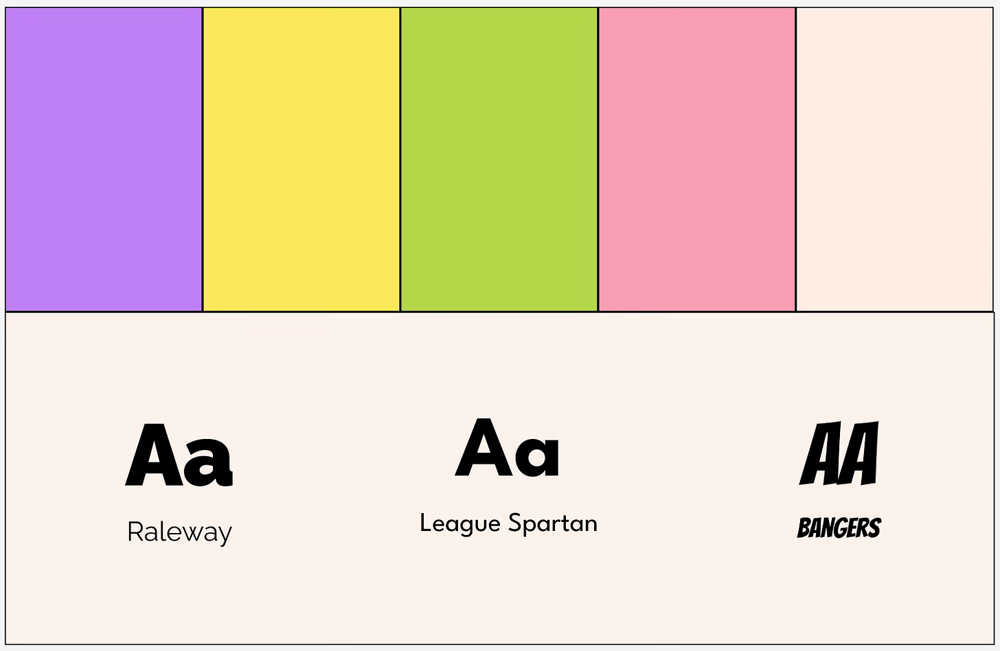
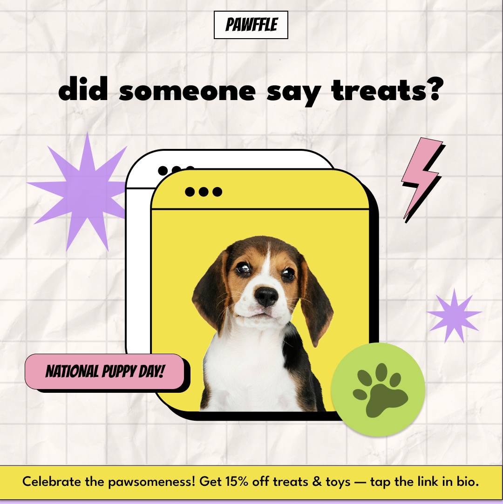
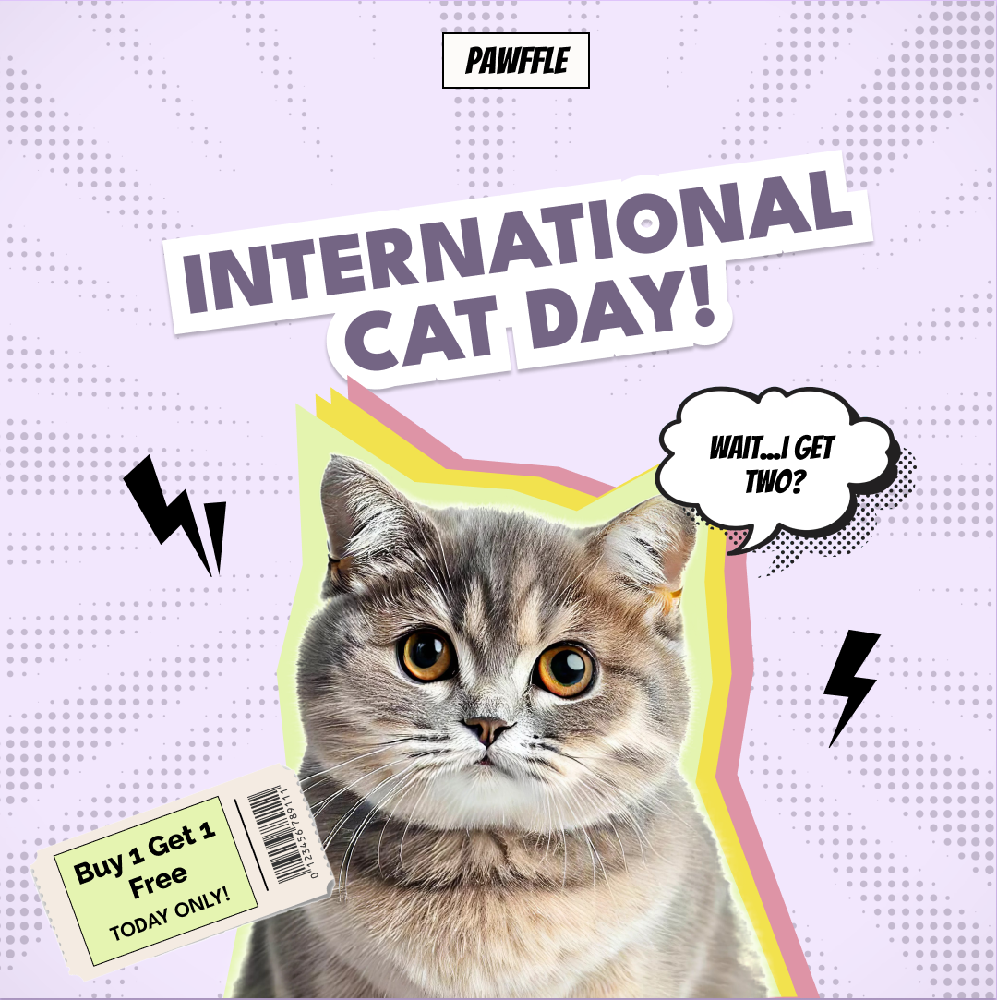
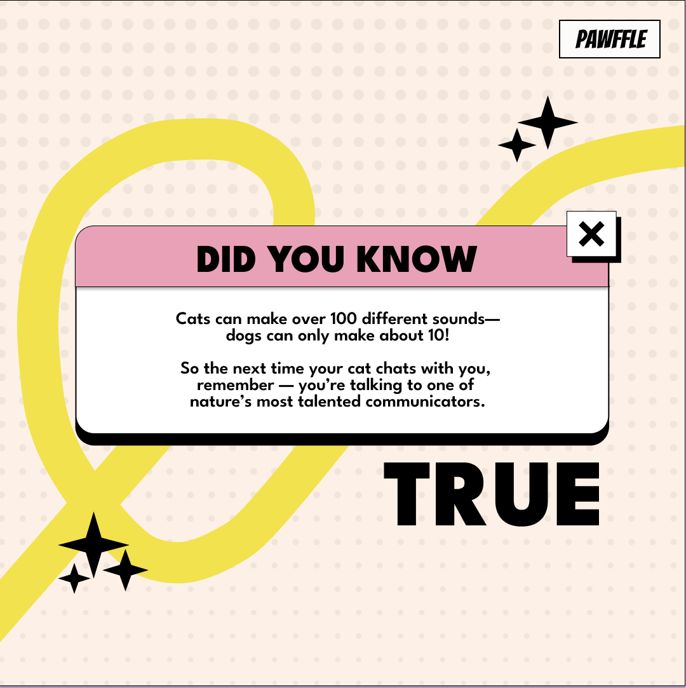
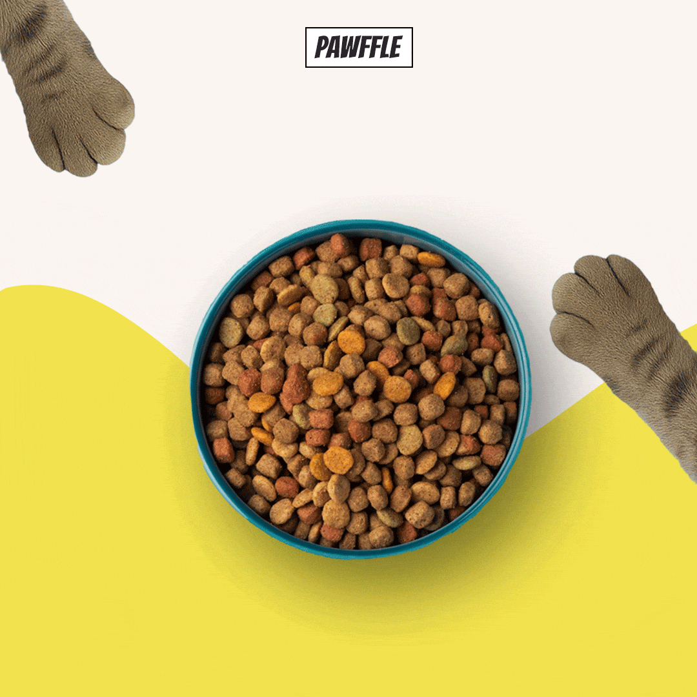

Where it began
An internship application asked me to create a set of pet-care campaign designs in 24 hours. After submitting, I kept thinking about how I could take the ideas further.
I started again as a personal project, giving the concept a new name and a bolder, more playful visual direction. That became Pawffle.
Finding the feeling
I gathered references from comic styles, Japanese posters and neobrutalism. Their bold, playful look helped shape a visual direction that would catch the eye and feel memorable to pet parents.

The name Pawffle combines “paw” and “waffle”—a little wordplay that felt warm, memorable and pet-related.
A bold visual language
Bright contrasting colours, chunky type, starbursts, grids and outlined boxes gave the campaign its playful character. I used these elements across the different formats to keep the work feeling connected.

Bringing the campaign to life
I created three social posts, a sale GIF, a mobile promotional mailer and a desktop website adaptation. The posts included National Puppy Day, International Cat Day and a pet-facts design.



For the mailer, I focused on a clear message, a vertical layout for phones and a simple call to action. I adapted the campaign
for a desktop banner too.

What I learned
The project pushed me to learn how to structure a mobile mailer and make frame-by-frame animation in Photoshop. Returning to the brief also gave me space to experiment, refine my ideas and balance personality with structure.